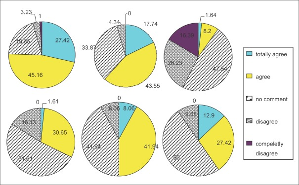

Does statistical expertise matter?
Adrian Barnett
8 October 2024
Queensland University of Technology
Outline
- Multiple examples of bad statistics
- Consequences of missing expertise
- Potential interventions
Conflicts of interest
- I am a statistician
- Current member and past president of the Statistical Society of Australia
- Current president of Association for Interdisciplinary Meta-research & Open Science (AIMOS)
What is statistics?
- Statistics uses data to inform decision making
- Data literacy is a key skill for most researchers
- Bland and Altman: “Bad statistics makes bad research, bad research may lead to bad medicine, and bad medicine may cost lives.”
- David Spiegelhalter: “Why do people find probability so unintuitive and difficult? …
- … Well after years of careful research I have finally concluded that it’s because probability actually is unintuitive and difficult.”
Terrible plots ü§™

Pie charts ü§Æ


Decimal places
Painting by Christian Albrecht Jensen, Public domain, via Wikimedia Commons
Statistical methods section
- 17% used 50 words or fewer
- 12,675 papers (11%) closely matched to the sentence “a p-value < 0.05 was considered statistically significant”
- Some sections just said “t-test” or “SPSS”
Linear regression
- Randomly selected 100 papers from PLOS ONE that used linear regression
Only 37% reported checking any linear regression assumptions
No authors checked all assumptions
Common misconception that the Y variable should be checked for normality, with only 5 of the 28 papers correctly checking the residuals
Outranked
Me: “Hello Anon, I’ve just read the draft paper and there are an enormous amount of p-values. I’m sure you remember the long conversation we had about why this isn’t a useful approach. Can we take them out, especially those don’t relate to the main question? And for the main question can we use a mean difference with a confidence interval? I sent you those results.”
Anon: “Adrian, thanks again for your help with the analysis. We do understand your point on the p-values. However, the journals and reviewers will expect to see them, hence we need to keep them in for this paper.”
We got cited!
Our title: Evidence of questionable research practices in clinical prediction models
The citation: “… characterized by an AUC value according to the ROC curve between 0.8–0.9; with values that are 0.7 and above, the predictor is deemed satisfactory”
We got cited!
Our title: Evidence of questionable research practices in clinical prediction models
The citation: “… characterized by an AUC value according to the ROC curve between 0.8–0.9; with values that are 0.7 and above, the predictor is deemed satisfactory”
Our title: An observational analysis of the trope “A p-value of< 0.05 was considered statistically significant” and other cut-and-paste statistical methods
The citation: “A P-value smaller than 0.05 indicates a significant effect of Tp on ts”
Shortage of statistical reviewers
Statistics needs a critical mass
Funders should stop funding clinical prediction models unless there is an experienced statistician on the team
Licence to research

Random audits

Ethics
Mandate statisticians on ethics committees
Only 34% of committees have access to a qualified statistician
Quote: Most medical practitioners are very good with stats, they are qualified, but would not necessarily be classified as a “qualified statistician”

@sesamestreet


{kind=link}